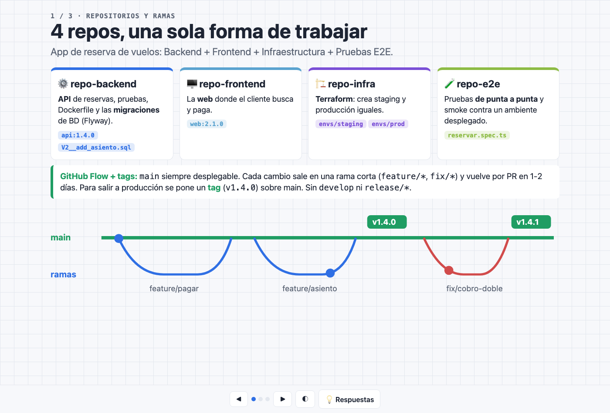
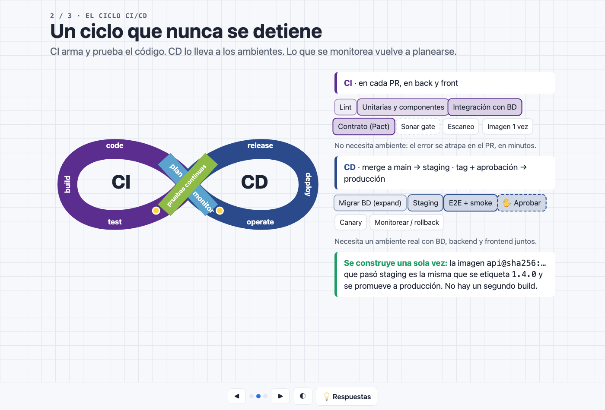
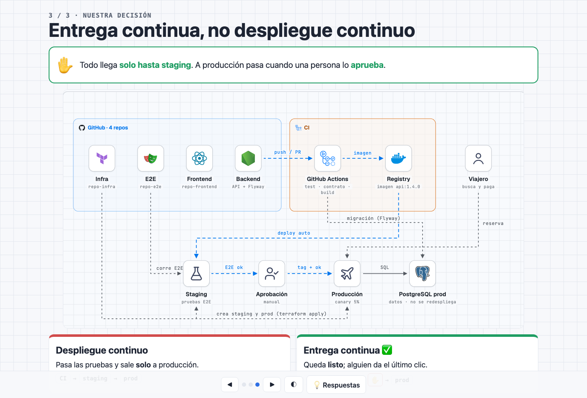

Guion · Estrategia CI/CD app de vuelos
Unos 5 minutos en total, entre Sergio y Valeria. Cada bloque dice quién habla; lo gris señala qué mostrar en la diapo. Las preguntas las responde quien tenga esa parte.

Repos y ramas
Sergio"Usamos cuatro repositorios: backend, frontend, infraestructura y pruebas de punta a punta."
Señalar las 4 tarjetas.
Sergio"El backend guarda también las migraciones de base de datos, que aplica Flyway en orden. Van juntas porque la versión del API depende de la versión del esquema. El de infraestructura tiene el Terraform que crea staging y producción iguales. Y el de E2E tiene las pruebas que corren contra un ambiente desplegado."
Sergio"Así cada parte tiene su pipeline. El costo es coordinar front y back, y eso lo cubren las pruebas de contrato."
Señalar el dibujo de ramas.
Sergio"Para ramificar usamos GitHub Flow con tags. main siempre está lista para desplegar. Cada cambio sale en una rama corta y vuelve por pull request en uno o dos días. Cuando queremos salir a producción, ponemos un tag sobre main, por ejemplo v1.4.0."

El ciclo y las etapas
Valeria"Este es el ciclo de CI/CD. A la izquierda está la integración continua y a la derecha la entrega. Nunca se detiene: lo que monitoreamos en producción vuelve a convertirse en plan."
Señalar los puntos amarillos que recorren el ciclo.
Valeria"Backend y frontend tienen su pipeline de CI, que corre en cada push y pull request: lint, pruebas unitarias y de componentes, integración con la base de datos, pruebas de contrato con Pact, el quality gate de Sonar, escaneo de seguridad y publicar la imagen. Va en CI porque nada de eso necesita un ambiente desplegado: el error se atrapa en el pull request."
Valeria"El pipeline de CD toma esa misma imagen. Primero migra la base de datos, despliega en staging y corre las pruebas de punta a punta. Después alguien aprueba, sale a producción con canary y lo monitoreamos. Va en CD porque necesita un ambiente real con todo junto."
Valeria"Lo que entra a main va a staging. Lo que tiene tag puede ir a producción."

La decisión
Sergio"Nuestra respuesta: entrega continua, no despliegue continuo. Todo llega solo hasta staging, y a producción pasa cuando una persona lo aprueba."
Recorrer el diagrama de izquierda a derecha.
Sergio"Así se ve el escenario completo: el repo de infraestructura crea staging y producción con Terraform. Backend y frontend alimentan GitHub Actions, que construye la imagen y la guarda en el registry. De ahí se despliega sola a staging. El repo de E2E corre sus pruebas contra staging. Si pasan, alguien aprueba y sale a producción. El viajero solo ve producción."
Sergio"PostgreSQL queda aparte porque no es un paso del pipeline: son los datos reales y no se redespliegan. El pipeline solo le aplica las migraciones, que es la línea punteada."
Señalar las dos tarjetas de comparación.
Valeria"¿Por qué con aprobación? Por tres razones. Hay pagos y reservas, así que un error cuesta dinero. Los cambios de base de datos no siempre se pueden revertir. Y aun así bajamos el riesgo: salimos con canary al 5% de usuarios y hay rollback automático si suben los errores."
Valeria"Esa es nuestra estrategia. ¿Preguntas?"